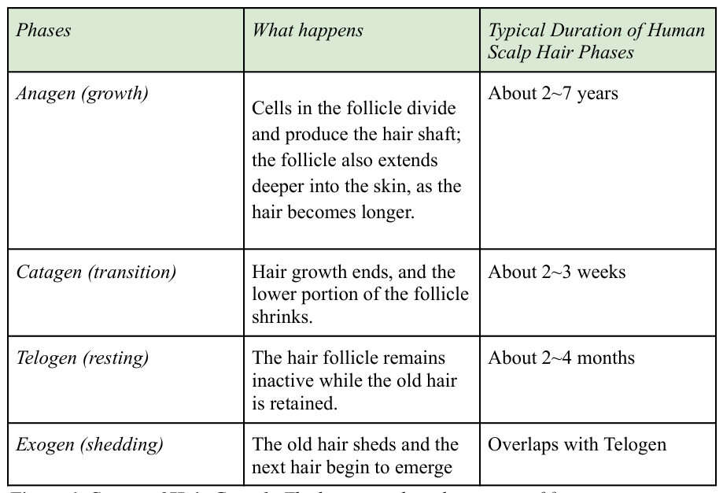

1.1.1 Learning Objective 1: Describe and distinguish the hair growth/ shedding phases
The hair follicle undergoes continuous cycles of growth, degeneration, rest, and regeneration. Natarelli et al. describe four stages of this process: anagen, catagen, telogen, and exogen. During the anagen phase, also known as the growth stage, cells in the follicle divide and produce the hair shaft. The follicle also extends deeper into the skin, as the hair becomes longer. This stage is essential, as the duration a follicle remains in this stage helps cells determine how long hair can grow. During the catagen phase, also known as the transition stage, active production of the hair shaft ends, and the lower portion of the follicle shrinks. Then the follicle enters telogen, the resting phase, during which a fully formed hair remains present without growing. Finally, in the exogen phase, or the shedding phase, the old hair is released and falls out, and new hair begins to grow underneath it. This cycle repeats again and again, gradually and chronologically. (Natarelli et. al., 2023) (INSERT ADD-IN #1)
1.2 Hair Cycle in Other Non-Human Animals.
1.2.1 Learning Objective 2: Compare and contrast the hair-shedding cycle of humans and
non-human mammals.
Although all of the mammals have hair, there is a variation in the type of hair cycle. Mammals like humans demonstrate asynchronized hair growth, meaning that follicles do not enter four phases —anagen, catagen, telogen, and exogen — at the same time, allowing follicles to cycle independently. This prevents humans from simultaneous shedding across the entire scalp, and allows consistent hair coverage over time. Other mammals can demonstrate more synchronized hair growth; for instance, large portions of a coat may change seasonally. When follicles enter a shedding and replacement period around the same time, they might undergo the process of molting. Molting is a coordinated period of hair loss and replacement coat, frequently influenced by environmental seasonal cues (Vogel, 2026).
Chimpanzee hairs, like human hairs, grow through transitions and stages, with individual follicles not being synchronized (Project Chimps, 2026). Chimpanzees do not normally undergo the seasonal molt, unlike other mammals. Instead, their hair grows to its maximum length, a concept known as terminal length. Terminal length means hair’s reachable maximum length, which is determined by the duration of anagen. Chimpanzees have a short anagen period, leading to shorter terminal length than humans, lasting only from a few weeks to months. It helps them to regulate and maintain their short hair length (Project Chimps, 2026; Vogel, 2026).
2. Factors that Impact the Hair Cycle
The hair cycle is not a completely independent bodily process; there are even factors that cause changes and disruptions in cycles. Several factors are associated with transitions in the cycle, including inflammation, hormones, stress, nutritional deficiency, sleep quality, and medications. (Natarelli et. al., 2023) These internal and biological changes impact every stage of their hair cycle.
2.1 Stress and Disruption of the Hair Growth/Shedding Cycle
Stress is a physiological response to a perceived or physical challenge. A certain degree of stress can support the survival of species by impacting their cardiovascular activity, facilitating memory usage, mobilizing supplementary energy, alertness, and immune signalling (Smeets, 2011). Repeated stress, however, may disrupt body maintenance. Hair follicles can be affected in the neuroendocrine pathway by influencing the timing of regeneration. Stress is often associated with changes in cortisol, a steroid hormone that is produced by the adrenal glands (Thom, 2016). Due to its nature, cortisol is commonly used as a biomarker to determine and investigate physiological stress levels.
One method of evaluating the impact of stress on the hair cycle is by using an animal model in a controlled environment. Animals may provide relevant information to humans by investigating their biological processes in labs, while resolving the ethical concerns for human subject experiments. A well-designed experiment would include an independent variable, a dependent variable, and a control group. These components allow researchers to change one factor and determine whether that change was effective through comparison with biological response measurements.
(INSERT ADD-IN #2) 2.1.1 Learning Objective 3: Design an experiment that would reveal the impact of stress on disruption in hair shedding/growth cycle.
Now design the follow-up research that tests whether changes in the hair cycle are followed by stress level. Conduct research where animals are not exposed to harmful stress.
- State a leading question and hypothesis
- Predict how lower or higher cortisol levels relate to hair growth and the shedding cycle.
- Specify your variables and groups
- Identify the manipulated intervention and control constant factors.
- Explain group assignments.
- Evaluate causation
3. Potential Treatment and Intervention
3.1 Nutritional Support and Medical Therapies
As hair plays an important role in the aforementioned beneficial functions, humans have been researching ways to treat severe hair shedding. Disruptions in hair shedding can be addressed through nutritional support and medical therapies, but the effectiveness of these approaches depends on the cause of the hair loss. Ideally, hair follicles require sufficient nutrients and sufficient biological signalling to maintain normal hair growth, but deficiencies and imbalances may cause interference in follicular activity (Gokce, Nuriye, et al., 2022; Guo & Katta, 2017; Natarelli, Nicole, et al., 2023).
Nutritional support for the hair cycle refers to the maintenance of a diet to correct deficiencies that may interfere with hair growth. As micronutrients like iron, zinc, and vitamin D contribute to the biological processes of hair follicle development, deficiencies may contribute to increased hair shedding and reduced hair growth. Therefore, correcting the nutritional deficiency may help promote healthier follicular activity. However, although nutritional support makes it healthier, excessive supplementation does not really improve hair growth and may even produce adverse side effects (Guo & Katta, 2017).
Medical therapies involve treatments designed to address specific biological mechanisms targeted for hair loss. For instance, minoxidil is a commonly used medication that increases blood flow and hair-follicle activity. It promotes the transition from telogen to anagen, which allows hair follicles to move into hair production. Finasteride, which inhibits 5-alpha-reductase, an enzyme that converts testosterone into dihydrotestosterone (DHT), is also an example of medical treatment for the hair growth cycle. DHT contributes to follicular miniaturization, which causes hair follicles to produce thinner hairs. By reducing DHT, finasteride can help to maintain hair growth in individuals who experience hair loss (Natarelli et al., 2023).
Although both nutritional support and medical therapies seem to contribute to improving follicular health, neither of them is a universally effective intervention. Nutritional support is more relevant when the patient is going through nutrient deficiencies, whereas medical therapies are more appropriate when involving specific hormonal mechanisms.
3.1.1. Learning Objective 4: Evaluate and defend which treatment is more appropriate.
- Consider and create a specific scenario where nutritional support would be more appropriate. Why is it more appropriate than medical therapy?
- Consider and create a specific scenario where medical therapy would be more appropriate. Why is it more appropriate than nutritional support?
CHAPTER ADD-INS
Add-in #1
| Phases | What happens | Typical Duration of Human Scalp Hair Phases |
|---|---|---|
| Anagen (growth) | Cells in the follicle divide and produce the hair shaft; the follicle also extends deeper into the skin, as the hair becomes longer. | About 2~7 years |
| Catagen (transition) | Hair growth ends, and the lower portion of the follicle shrinks. | About 2~3 weeks |
| Telogen (resting) | The hair follicle remains inactive while the old hair is retained. | About 2~4 months |
| Exogen (shedding) | The old hair sheds and the next hair begin to emerge | Overlaps with Telogen |

catagen, telogen, exogen. This figure highlights the essential process during each stage, and approximate duration for human scalp hair growth. Each phase varies in their duration, while exogen overlaps with telogen.
Add-in #2
Can Stress Disrupt the Hair-Growth Cycle?
What did scientists ask?
Stress activates the hypothalamic-pituitary-adrenal (HPA) axis, which regulates the release of cortisol. As cortisol is believed to be incorporated into growing hair, the hair samples may provide an indicator for long-term HPA activity. Novak et. al. (2014) conducted research on whether rhesus macaques with a high rate of hair loss also had a higher hair cortisol concentration than other macaques with normal hair growth.
Method
They investigated 99 adult rhesus macaques from three different U.S. primate research centers. For the experimental group, they selected rhesus macaques with more than 30% hair loss and a comparison group with less than 5% hair loss. During veterinary examination, the team photographed each macaque and used ImageJ software to calculate the percentage of the body affected by hair loss. For each macaque, a small hair sample was collected from the nape of their neck and was analyzed for cortisol. The researchers also considered other factors, including age, body weight, sampling month, and the facilities.
Result
From female macaques from three centers, mean hair cortisol was for the
- 4 ± 6. 1 𝑝𝑔/𝑚𝑔
experimental group, compared to for the comparison group. The
- 4 ± 2. 4 𝑝𝑔/𝑚𝑔
association between HPA and hair loss was significant except for the third facility. Although this study establishes the relationship between HPA activity and hair loss, it does not support a direct relationship and did not consider stages of hair cycles: anagen, catagen, telogen, and exogen or shedding rates.
Variables
| Terminologies | Application |
|---|---|
| Independent Variable | Observed hair loss (>30% vs. <5%) |
| Dependent Variable | Hair Cortisol Concentration |
|---|---|
| Control/ Comparison Group | Macaques with less than 5% hair loss compared with those that showed more than 30% |
| Controlled Variable | The team standardized hair-sampling location and accounted for age, body weight, timing of collection, and facility. |
| Animal Model | Rhesus Macaques (non-human primate) |
Novak, M. A., Hamel, A. F., Coleman, K., Lutz, C. K., Worlein, J., Menard, M., Ryan, A., Rosenberg, K., & Meyer, J. S. (2014). Hair loss and hypothalamic-pituitary-adrenocortical axis activity in captive rhesus macaques (Macaca mulatta). Journal of American Association for Laboratory Animal Science, 53(3), 261–266.
GLOSSARY
| Term | Definition |
|---|---|
| Anagen Phase | Growth Phase of the hair cycle; the hair follicle rapidly divides, the hair shaft lengthens, and the follicle remains deeply embedded into the skin. |
| Catagen Phase | Transition phase of hair cycle; the lower part of the hair follicle shrinks and separates from the blood supply. |
| Telogen Phase | The resting phase of the hair cycle; the hair follicle is more inactive, and the fully formed hair remains in the follicle, without growing. |
| Exogen Phase | Shedding phase of the hair cycle; The old hair is released and falls out, and new hair begins to grow underneath it. |
|---|---|
| Hair Follicle Niche | A microenvironment surrounding hair follicle stem cells, including extracellular matrix, blood vessels, nerves, signaling molecules, and other factors that regulate cell-stem regeneration and growth. |
| Mammals | Animals that have hair or fur at some point in their lives, which help with insulation, sensation, and protection. |
| Asynchronized | Hair follicles cycle independently, so all the different hairs are in different growth phases at the same time. Asynchronized growth is more typical and helps prevent large amounts of hair from shedding at once. |
| Synchronized hair growth | Groups of hair follicles that enter the same growth/shedding cycle at the same time (synchronously). Common in many animals that go through seasonal coat changes. |
| Molting | A seasonal periodic shedding and replacement of hair or fur. Molting can result in a synchronized change in hair growth cycle for mammals. |
| Terminal Length | Biologically controlled maximum length a hair can reach, determined by how long the follicle remains in anagen |
| Cortisol | A steroid hormone produced by adrenal glands. Regulates the body’s response to stress and immune activity. Cortisol is usually used as an indicator for stress, as its level often increases during physical or psychological stress. |
| Animal model | A non-human animal that is used in scientific research to study biological processes, treatments, responses, etc that may be relevant to humans. |
| Independent Variable | The factor that the researcher changes or manipulates in an experiment. |
| Dependent Variable | The factor that is measured or observed to determine the effect of the independent variable. |
|---|---|
| Control Group | A group that does not receive the experimental treatment and receives standard conditions. Provides a baseline to compare with the experimental group. |
| HPA-Axis | A neuroendocrine system involving the hypothalamus and adrenal glands that regulates the body’s physiological response to stress, including cortisol release. |
| DHT | A hormone produced from testosterone by the enzyme 5-alpha-reductase. DHT can contribute to hair follicle miniaturization and hair loss. |
| Follicular Miniaturization | A process in which hair follicles progressively shrink and produce thinner hairs, often involved with the effects of DHT in hair loss. |
| Nutritional Support | Use of diet and nutrients to help maintain health, support body functions, and correct nutritional deficiencies. |
| Medical Therapy | Treatment used to improve or cure a medical condition, which involves medication, procedures, or interventions. |
| Nanoparticle | An extremely small particle, measured in nanometers (10^-9 m), that can be designed to carry drugs or substances and target specific cells or tissues. |
| Controlled Drug Release | A drug-delivery method to release medication at a regulated rate, time, or location to maintain the effect of medication while reducing the risk of unwanted side effects. |
| Micronutrient Supplementation | The use of vitamins, minerals, and other nutrients in small amounts to correct or prevent deficiencies, including supplementation of iron, zinc, and vitamin D. |
REFERENCES Correia, Ana S., et al. "Nanotechnology-Based Strategies for Hair Follicle Regeneration and Targeting." Nanomaterials, vol. 13, no. 12, 2023, article 1888. MDPI, https://doi.org/10.3390/nano13121888.
Gokce, Nuriye, et al. "An Overview of the Genetic Aspects of Hair Loss and Its Connection with Nutrition." Journal of Preventive Medicine and Hygiene, vol. 63, no. 3, suppl. 3, 2022, pp. E228–E238, https://doi.org/10.15167/2421-4248/jpmh2022.63.253.2765.
Guo, Emily L., and Rajani Katta. “Diet and Hair Loss: Effects of Nutrient Deficiency and Supplement Use.” Dermatology Practical & Conceptual, vol. 7, no. 1, 2017, pp. 1–10. https://doi.org/10.5826/dpc.0701a01 Natarelli, Nicole, et al. "Integrative and Mechanistic Approach to the Hair Growth Cycle and Hair Loss." Journal of Clinical Medicine, vol. 12, no. 3, 2023, article 893. PubMed Central, https://doi.org/10.3390/jcm12030893.
Novak, M. A., Hamel, A. F., Coleman, K., Lutz, C. K., Worlein, J., Menard, M., Ryan, A., Rosenberg, K., & Meyer, J. S. (2014). Hair loss and hypothalamic-pituitary-adrenocortical axis activity in captive rhesus macaques (Macaca mulatta). Journal of American Association for Laboratory Animal Science, 53(3), 261–266.
Randall, Valerie A., John P. Sundberg, and Michael P. Philpott. "Animal and In Vitro Models for the Study of Hair Follicles." Journal of Investigative Dermatology Symposium Proceedings, vol. 8, no. 1, 2003, pp. 39–45, https://doi.org/10.1046/j.1087-0024.2003.00804.x.
Smeets, T., Otgaar, H., Raymaekers, L., Peters, M. J. V., & Merckelbach, H. (2011). Survival processing in times of stress. Psychonomic Bulletin & Review, 19(1), 113–118.
https://doi.org/10.3758/s13423-011-0180-z Thom, Erling. "Stress and the Hair Growth Cycle: Cortisol-Induced Hair Growth Disruption." Journal of Drugs in Dermatology, vol. 15, no. 8, 2016, pp. 1001–1004.
Vogel, Lauren. "Does Chimpanzee Hair Change with the Seasons?" Project Chimps, edited by Ali Crumpacker, 1 Jan. 2026, projectchimps.org/chimpanzee-hair-seasonal-change/. Accessed 17 Sept. 2026.
Yamanashi, Yumi, Naruki Morimura, Yusuke Mori, Misato Hayashi, and Juri Suzuki. "Cortisol Analysis of Hair of Captive Chimpanzees (Pan troglodytes)." General and Comparative Endocrinology, vol. 194, 2013, pp. 55–63. PubMed, https://doi.org/10.1016/j.ygcen.2013.08.013.
Yesudian, P. . Human hair – An evolutionary relic? International Journal of Trichology, 3(2), 69, 2011, https://doi.org/10.4103/0974-7753.90799 UNIT AND CHAPTER Unit: Infradian Rhythms